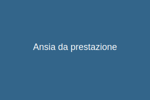
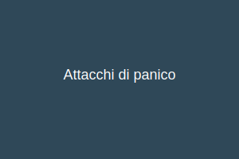
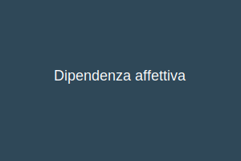
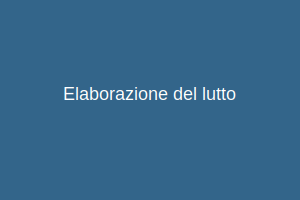
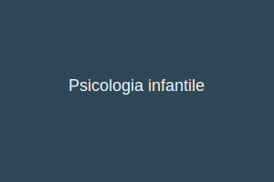

Aree di Intervento

Ansia da prestazione
Aiuto nel superare l'ansia legata alle prestazioni in diversi ambiti della vita.
Scopri di più

Attacchi di panico
Supporto nella gestione e superamento degli attacchi di panico e disturbi d'ansia.
Scopri di più
Bulimia nervosa
Assistenza per disturbi alimentari e percorsi terapeutici personalizzati.
Scopri di più

Dipendenza affettiva
Recupero dell'autonomia emotiva e miglioramento delle relazioni interpersonali.
Scopri di più

Elaborazione del lutto
Supporto nell'affrontare il dolore della perdita e nel processo di elaborazione.
Scopri di più
